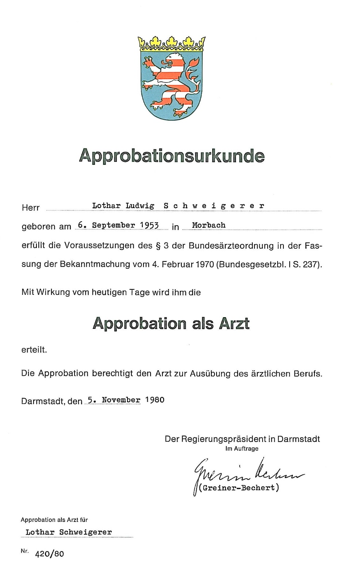

1976 bis 1980
Das Medizinstudium bestand damals aus vier Teilen, die alle mit einer Prüfung endeten.
Nach den ersten vier Semestern absolvierte man die Ärztliche Vorprüfung, auch Physikum genannt. Dabei wurden im Wesentlichen die theoretisch-naturwissenschaftlichen Fächer geprüft.
Nach bestandenem Physikum schlossen sich zwei weitere Semester an, in denen die klinisch-theoretischen Fächer gelehrt wurden, darunter Pharmakologie und Pathologie. Den Abschluss bildete das erste Staatsexamen.
Hatte man dies erfolgreich bestanden, folgte die klinisch-praktische Ausbildung. In den nächsten vier Semestern lernte man alle klinischen Fächer kennen, in Vorlesungen, Seminaren und mit „richtigen“ Patienten am Krankenbett. Ein riesiges Stoffgebiet, das mit dem zweiten Staatsexamen abgeschlossen wurde.
Anschließend kam ein weiteres Jahr, das man als PJler vollzeitig in der Klinik verbrachte. Es bestand aus drei Teilen zu je vier Monaten. Zwei Pflichtteile in Chirurgie und Innerer Medizin und ein Wahlteil. Den Abschluss bildete das dritte Staatsexamen mit einer schriftlichen und mündlichen Prüfung am Patienten.
Über das Physikum habe ich bereits berichtet. Nach bestandener Prüfung zog ich mit Luigi und meiner Schwester Resi im Frühjahr 1976 nach Heuchelheim in die Rodheimer Straße 88. Dort lernte ich für das erste Staatsexamen, das ich mit 73,8 Prozent richtiger Multiple-Choice-Antworten bestand. Das waren 33,8 Prozent mehr als zum Bestehen notwendig und sieben Prozent über dem Durchschnitt.
Und dann stand das Hammerexamen an.
Im zweiten Staatsexamen wurden alle klinischen Fächer geprüft. Die Rechnung für die Lernphase war einfach: Wenn man für jedes klinische Fach ein halbwegs vernünftiges Lehrbuch durcharbeiten musste, dann ergab das x Fächer mal Anzahl der Seiten des jeweiligen Lehrbuchs. Nach meiner Kalkulation waren es etwa 2.500 Lehrbuchseiten.
Wenn man dann y Tage Zeit bis zum Examen hatte, kam man auf die Seitenzahl, die täglich zu lernen war. Ich meine, es waren ungefähr 30 Seiten pro Tag. Der absolute Hammer. Durch diese Prüfung wollte man nicht durchfallen, um dann das ganze Drama noch einmal durchzustehen. Diese Prüfung musste man auf Anhieb bestehen.
Unter diesem Eindruck teilte ich Hilde mit, dass wir uns über den Lernzeitraum wohl nicht würden sehen können. Es war hart. Lernen fürs Physikum hoch zwei. Gleicher Ansatz: viel Kaffee, lange Nächte, Bettschwere erreichen mittels Zufuhr von Rotwein. Ächz.
Den Vorsatz, nun fast ein halbes Jahr ohne Hilde an meiner Seite zu bleiben, hielt ich natürlich nicht durch. Wir trafen uns gelegentlich, und ich schöpfte wieder Kraft.
Dann ging es ans Prüfen. Über zwei volle Tage. Abgefragt wurde in 580 Fragen. Bestanden hatte, wer die Hälfte richtig beantwortet hatte. Ich hatte 76,7 Prozent der Fragen richtig beantwortet und lag damit neun Prozent über dem Durchschnitt von 67,6 Prozent. Ein gutes Gefühl und Anlass für einige Partys, auf denen wir es so richtig krachen ließen.
Nur ein Jahr später stand die abschließende Prüfung an: das dritte Staatsexamen. Den schriftlichen Teil bestand ich mit 82,2 Prozent richtig beantworteter Fragen, fünf Prozent über dem Durchschnitt. Der mündliche Prüfungsteil konnte kommen.
Am 21. Oktober 1980 wurde ich mit zwei anderen Kandidaten in der Bibliothek der Chirurgischen Klinik geprüft. Wir bekamen jeweils einen Patienten zugeteilt, mussten seine Anamnese erheben, ihn klinisch untersuchen und uns zu diagnostischem Vorgehen und Therapie äußern.
Der erste Kandidat war so mäßig. Es ging schleppend, aber er kam durch. Die zweite, ein Mädel, war völlig von der Rolle. Totaler Blackout. Sie tat uns allen leid. Trotz aller Hilfen fand sie nicht in die Spur. Durchgefallen!
Und nun war ich als Letzter an der Reihe. Ich hatte mir mittlerweile eine ziemlich souveräne Gemütslage zugelegt. So ein Scheißegal-Gefühl. Das schlechte Abschneiden meiner Vorgänger bestärkte mich in meiner Einschätzung, dass ich die Prüfung gut hinter mich bringen würde.
Und tatsächlich. Es lief wie am Schnürchen. Hilde war im Raum, da die Prüfung öffentlich war. Sie war wohl aufgeregter als ich.
Dann wurde das Prüfungsergebnis verkündet. Eine durchgefallen, zwei hatten bestanden und einer mit Auszeichnung.
Das war ich.
Ich war nun „richtiger“ Arzt und bekam meine Approbation.

Approbationsurkunde als Arzt, ausgestellt am 5. November 1980 durch den Regierungspräsidenten in Darmstadt.